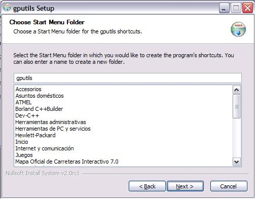
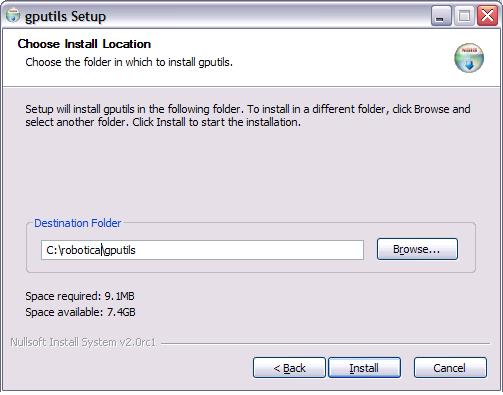
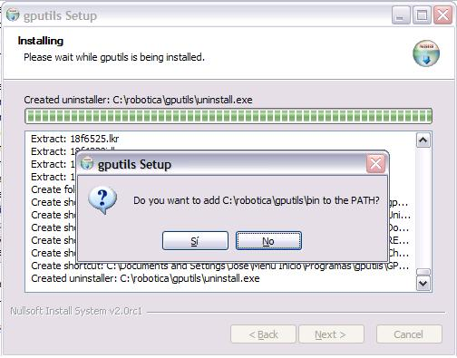

Pinchamos en la opcion “I Agree”. Y esta es la ventana siguiente:

Volvemos a Pulsar “Next” .

Ahora alegimos la instalacion “full” que es la que tiene todos los extras del programa. Después pulsamos “Next”

Ahora decidimos en que ruta podemos instalar el programa. En este caso queremos cambiar la que figura por defecto, pulsaremos en el botón “Browse” y elegiremos la ruta alternativa de instalación, o bien la escribiremos nosotros. Es importante que la ruta final sea “C:\robotica\gputils” para el correcto funcionamiento de los diferentes programas. La ventana, tras pulsar “Install” es:

Inmediatamente comenzará la descompresion e instalación del compilador, al finalizar nos pedirála confirmación para añadir la ruta de instalación al PATH del windows. Es muy importante pulsar “Sí”.

Con esto hemos finalizado la instalación tras pulsar el botón “Finish”. La aplicación no crea un acceso directo en el escritorio, pero si crea un acceso para los archivos de documentación y de desinstalación, que podeis ver a traves de la ruta Inicio->Programas->GPutils.